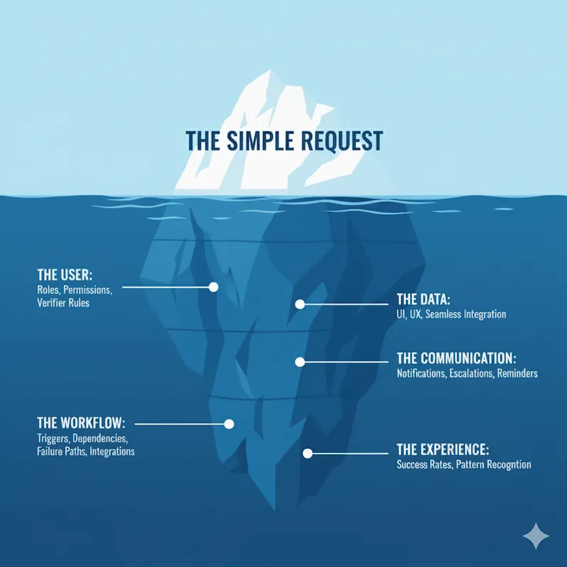

The Requirements Iceberg: Why Your “Simple” Solution Needs a Detailed Blueprint
September 30, 2025
You’re a busy EHS leader, and you’ve just handled a near-miss incident. The team identifies a corrective action: install a new safety guard. To ensure it works, you want to add a simple effectiveness check to your process: assign the task, start a one-month verification period, and have someone close it out.
Simple, right?
You present this idea, and in return, you get a multi-page specification document. You’re left wondering, “Why can’t they just build what I asked for?”
This isn’t bureaucracy; it’s a necessary translation. You’re experiencing the difference between the visible tip of an iceberg and the massive, unseen part below the water. This is the Requirements Iceberg.
Your request is the tip-the small, visible part. My job, as the strategist for your EHS system, is to work with the software team to discover and document the massive, submerged part. This hidden mass is what makes a solution robust, scalable, and genuinely useful.
Here’s what’s hiding beneath the surface.
The User: Who Does What?
The first submerged layer is about translating the human element into system logic. Your request makes perfect sense to a person, but a software system can’t assume anything. That’s why we must begin by explicitly defining who can do what, and why.
Who is “someone”?
The most dangerous assumption would be assigning the verification to the person who completed the original task. This creates a fundamental conflict of interest. An effective check requires an objective, independent party to be credible. Therefore, the system must be configured to prevent an assignee from verifying their own work. This immediately raises the next question: who is the right verifier? A robust system defines these assignment rules based on factors like organization hierarchy, the risk level of the action, or site-specific EHS roles. It must also be flexible enough to handle transfers or leaves during the monitoring period, ensuring the task always lands with the correct, impartial person.
Who needs to know?
Beyond who does the work, we must define who sees it. Who needs to see the status of this check? Probably the EHS leader, the department head, and maybe a compliance officer. The system needs to ensure the right people have visibility without cluttering the dashboards of those who don’t.
The Workflow: How Does It Actually Work?
A simple request usually describes the “happy path”-the ideal scenario where everything works. A robust system, however, must be built for the messy reality of the plant floor to ensure it achieves its core purpose: eliminating risk and preventing recurrence.
Your idea of a “one-month monitoring period” seems straightforward, but its implementation is full of branching paths and dependencies.
What’s the official trigger to start the monitoring period?
What officially starts the timer? Is it the moment the corrective action is marked “complete”? What if the completion date is changed? The effectiveness check workflow must be dynamically linked to the status of the parent action.
What essential information does the verifier need to see?
To perform a meaningful effectiveness check, the verifier needs a context. A truly integrated system doesn’t just assign them a task called “Verify Fix”. It provides a direct, clickable link to the entire history: the original incident report, the root cause analysis, and photos. Forcing a verifier to hunt for this information is a classic recipe for a low-quality, “check-the-box” verification.
How long do we really need to monitor this?
A fixed one-month monitoring period doesn’t reflect the reality of EHS work. A simple procedural change, like updating a warning label, might only need a one-week check. However, a fix designed to change operator behavior or verify a control on equipment that only runs periodically might need a 90-day or even a 6-month verification window. The duration must be configurable based on the type of check and the risk profile of the action. If it’s inflexible, your team will be forced to use sticky notes or calendar reminders to manage the real deadline, breaking your single source of truth.
How will the verifier prove the fix was effective?
This is about proving the original problem is gone, and a simple comment isn’t enough. The system must prompt for specific evidence, and a truly integrated system helps the user gather it. For instance, to confirm the absence of incident data, the system can automatically display a real-time feed on the verification screen: “System Check: Confirmed zero new near-miss reports linked to ‘Hazard: unguarded machine’ have been logged in the past 30 days.” To link observation data, it can provide a button to “Link Supporting Observations,” instantly attaching formal records. Finally, to capture qualitative feedback, it can connect to your Management of Change (MOC) module and automatically pull in operator sign-offs confirming their training and acceptance of the new control.
What happens if the fix is not effective?
What happens if the problem still exists? The system needs a clear, auditable path. Does a failure trigger a new, more thorough non-conformity, or does the original action simply reopen? (The latter is often the wrong choice.) If this logic is unclear, users will close the action anyway and send an email-hiding the dangerous fact that a serious risk is still present.
What other safety programs need to be updated with the result?
The result of the check must trigger actions in other modules, truly closing the loop on the process. If the fix is deemed effective, the system should prompt the user to formally update the central Risk Register, Job Hazard Analysis (JHA), or relevant SOPs to lock in the improvement. Conversely, if the fix fails, the system must flag this as a failed control and trigger a linkage to a Management of Change (MOC) process or a new Root Cause Analysis (RCA), ensuring a more rigorous investigation follows.
The Communication: Keeping Everyone Informed
Even the most robust workflow is useless if people don’t know what they need to do. A silent system is an ineffective one, making notifications the nervous system of your EHS platform.
Who needs to be kept in the loop, and when?
Upon initial assignment, for example, the verifier needs a clear email and in-app notification stating exactly what to do, the context, and the due date. Likewise, when the check is completed, status updates must automatically be sent to the original creator to confirm the loop is closed. But a truly effective communication strategy must also plan for reality, which brings us to our next critical question.
What happens if the verifier forgets?
This is the most common failure in any action-tracking system. Your system must automate accountability, escalating from gentle reminders to manager notifications. This isn’t nagging; it’s about creating a transparent, auditable safety net to ensure a critical verification never falls through the cracks.
The Data: Measure Impact, Not Just Tasks
While notifications create an immediate safety net for individual tasks, the true value merges when we look at the bigger picture. Your new verification step doesn’t exist in a vacuum; it becomes a source of organization learning, unless it’s a dead-end data silo. Your dashboards shouldn’t just show “open” or “closed” actions; that’s task management, not risk management. The system should answer strategic questions, such as: What is our Verification Success Rate? Which departments or sites are best at developing effective, long-term solutions? Are there recurring failure patterns in our corrective actions? Failure to integrate this data correctly doesn’t just skew a dashboard; it misses the single greatest opportunity to learn from your successes and failures.
The Experience: Making It Usable
Ultimately, the quality of the data we collect and the success of the entire workflow depend on the final submerged layer: the user’s experience. A powerful feature that is confusing or hard to use won’t be adopted, and the user’s journey must be seamless. Where do users go to see their assigned checks? The form for completing the check - the User Interface (UI) - needs to be clean and intuitive. The number of clicks it takes to complete the task - the User Experience (UX) - should be minimal. For example, the notification email could contain a direct link that takes the user straight to the task. We aim for the path of least resistance.
From “Simple” to Successful
When you see the full iceberg, it’s clear that the “simple” request is just the starting point. The detailed specification isn’t about adding unnecessary complexity; it’s about anticipating challenges and building a solution that is robust, scalable, and reliable. It is the most effective form of eliminating the ambiguity that leads to project delays and budget overruns. In my experience, this rigorous process can reduce scope creep and rework significantly.
This detailed specification is a shared document that ensures we are building the right solution, together. By defining these hidden requirements upfront, we ensure the feature doesn’t just get built-It gets adopted. It works correctly every time, provides the data you need for compliance and improvement, and ultimately makes your workplaces safer.
So, the next time you identify a need for your EHS system start with the tip of the iceberg, but don’t stop there. Ask yourself: Who, besides the primary user, needs to be involved? What happens if this fails? How will we prove it’s working six months from now? Sketching out these hidden layers will not only clarify your vision - it will accelerate our journey to building a solution that lasts.
If you are ready to move from understanding the "why" of the Requirements Iceberg to mastering the "how" of building a truly resilient EHS architecture, my book, A Practical Guide to EHS Software Implementation, provides the structured roadmap to make it a reality.